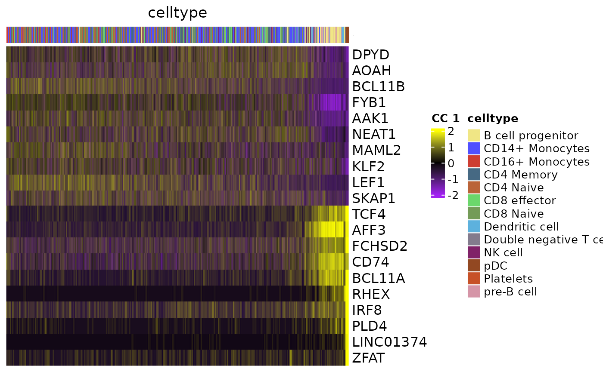
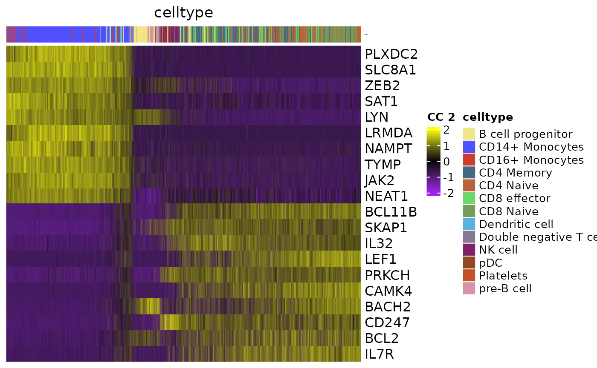

Using MOJITOO in R for Seurat
Mingbo Cheng
October 23, 2024
SeuratObject_integration.Rmd1. download data
## 2024-10-23 12:32:32 URL:https://cf.10xgenomics.com/samples/cell-arc/1.0.0/pbmc_granulocyte_sorted_10k/pbmc_granulocyte_sorted_10k_filtered_feature_bc_matrix.h5 [162282142/162282142] -> "pbmc_granulocyte_sorted_10k_filtered_feature_bc_matrix.h5.1" [1]
## WARNING: cannot verify costalab.ukaachen.de's certificate, issued by ‘CN=GEANT OV RSA CA 4,O=GEANT Vereniging,C=NL’:
## Unable to locally verify the issuer's authority.
## 2024-10-23 12:32:32 URL:https://costalab.ukaachen.de/open_data/MOJITOO/PBMC-Multiom_annotation.tsv [400178/400178] -> "PBMC-Multiom_annotation.tsv.1" [1]3. Create Seurat Object
mtxs <- Read10X_h5("pbmc_granulocyte_sorted_10k_filtered_feature_bc_matrix.h5")## Genome matrix has multiple modalities, returning a list of matrices for this genome
RNA <- mtxs[["Gene Expression"]]
ATAC <- mtxs[["Peaks"]]
peaks <- rownames(ATAC)
ATAC <- ATAC[which(startsWith(peaks, "chr")), ]
meta <- read.csv("PBMC-Multiom_annotation.tsv", sep="\t")
RNA <- RNA[, meta$barcode]
ATAC <- ATAC[, meta$barcode]
rownames(meta) <- meta$barcode
object <- CreateSeuratObject(counts=RNA, meta.data=meta, assay="RNA")
object[["Peaks"]] <- CreateAssayObject(counts=ATAC)
object$celltype <- object$annotation
rm(mtxs)
rm(RNA)
rm(ATAC)
gc()## used (Mb) gc trigger (Mb) max used (Mb)
## Ncells 12885724 688.2 20530678 1096.5 16201714 865.3
## Vcells 185070328 1412.0 602551575 4597.2 589967819 4501.14. RNA & ATAC dimension reductions
## RNA pre-processing and PCA dimension reduction
DefaultAssay(object) <- "RNA"
object <- NormalizeData(object, normalization.method = "LogNormalize", scale.factor = 10000, verbose=F)
object <- FindVariableFeatures(object, nfeatures=3000, verbose=F)
object <- ScaleData(object, verbose=F)
object <- RunPCA(object, npcs=50, reduction.name="RNA_PCA", verbose=F)
## RNA pre-processing and LSI dimension reduction
DefaultAssay(object) <- "Peaks"
object <- RunTFIDF(object, verbose=F)## Warning in RunTFIDF.default(object = GetAssayData(object = object, slot =
## "counts"), : Some features contain 0 total counts
object <- FindTopFeatures(object, min.cutoff = 'q0', verbose=F)
object <- RunSVD(object, verbose=F)5. RUN MOJITOO
object <- mojitoo(
object=object,
reduction.list = list("RNA_PCA", "lsi"),
dims.list = list(1:50, 2:50), ## exclude 1st dimension of LSI
reduction.name='MOJITOO',
assay="RNA"
)## processing RNA_PCA## adding lsi## 1 round cc 44## Warning: Keys should be one or more alphanumeric characters followed by an
## underscore, setting key from MOJITOO to MOJITOO_## Warning: All keys should be one or more alphanumeric characters followed by an
## underscore '_', setting key to MOJITOO_
DefaultAssay(object) <- "RNA"
embedd <- Embeddings(object[["MOJITOO"]])
object <- RunUMAP(object, reduction="MOJITOO", reduction.name="MOJITOO_UMAP", dims=1:ncol(embedd), verbose=F)## Warning: The default method for RunUMAP has changed from calling Python UMAP via reticulate to the R-native UWOT using the cosine metric
## To use Python UMAP via reticulate, set umap.method to 'umap-learn' and metric to 'correlation'
## This message will be shown once per session
saveRDS(object, "seu.Rds")7. MOJITOO CCs
GeneCCDimPlot(object,
CCsToPlot = 1:4,
RNA.assay="RNA",
umap = "MOJITOO_UMAP",
MOJITOO.reduction="MOJITOO")## adding MOJITOO assay...## Warning: Keys should be one or more alphanumeric characters followed by an
## underscore, setting key from mojitoo.assay_ to mojitooassay_## Centering and scaling data matrix## Scale for colour is already present.
## Adding another scale for colour, which will replace the existing scale.
## Scale for colour is already present.
## Adding another scale for colour, which will replace the existing scale.
## Scale for colour is already present.
## Adding another scale for colour, which will replace the existing scale.
## Scale for colour is already present.
## Adding another scale for colour, which will replace the existing scale.Heatmap
GeneCCHeatmap(object,
CCsToPlot = 1:2,
RNA.assay="RNA",
colorbar.group = "celltype",
MOJITOO.reduction="MOJITOO",
filter.mito = T,
filter.ribo = T,
topN = 10
)## ccsybygenes...## Centering and scaling data matrix## $`1`
##
## $`2`
Download track dependent data
## WARNING: cannot verify costalab.ukaachen.de's certificate, issued by ‘CN=GEANT OV RSA CA 4,O=GEANT Vereniging,C=NL’:
## Unable to locally verify the issuer's authority.
## 2024-10-23 12:35:28 URL:https://costalab.ukaachen.de/open_data/MOJITOO/genes.gtf.zip [24022019/24022019] -> "genes.gtf.zip" [1]
## Archive: genes.gtf.zip
## inflating: genes.gtf
## WARNING: cannot verify costalab.ukaachen.de's certificate, issued by ‘CN=GEANT OV RSA CA 4,O=GEANT Vereniging,C=NL’:
## Unable to locally verify the issuer's authority.
## 2024-10-23 12:35:37 URL:https://costalab.ukaachen.de/open_data/MOJITOO/bigwig.zip [717556067/717556067] -> "bigwig.zip" [1]
## Archive: bigwig.zip
## creating: bigwig/
## inflating: bigwig/CD14+_Monocytes.bw
## inflating: bigwig/CD4_Memory.bw
## inflating: bigwig/Platelets.bw
## inflating: bigwig/CD4_Naive.bw
## inflating: bigwig/CD16+_Monocytes.bw
## inflating: bigwig/pre-B_cell.bw
## inflating: bigwig/CD8_Naive.bw
## inflating: bigwig/pDC.bw
## inflating: bigwig/Dendritic_cell.bw
## inflating: bigwig/NK_cell.bw
## inflating: bigwig/Double_negative_T_cell.bw
## inflating: bigwig/CD8_effector.bw
## inflating: bigwig/B_cell_progenitor.bwTracks
data_track_bws <- list(
"B cell progenitor" = "bigwig/B_cell_progenitor.bw",
"CD14+ Monocytes" = "bigwig/CD14+_Monocytes.bw",
"CD16+ Monocytes" = "bigwig/CD16+_Monocytes.bw",
"CD4 Memory" = "bigwig/CD4_Memory.bw",
"CD4 Naive" = "bigwig/CD4_Naive.bw",
"CD8 effector" = "bigwig/CD8_effector.bw",
"CD8 Naive" = "bigwig/CD8_Naive.bw",
"Dendritic cell" = "bigwig/Dendritic_cell.bw",
"Double negative T cell" = "bigwig/Double_negative_T_cell.bw",
"NK cell" = "bigwig/NK_cell.bw",
"pDC" = "bigwig/pDC.bw",
"Platelets" = "bigwig/Platelets.bw",
"pre-B cell" = "bigwig/pre-B_cell.bw"
)
suppressPackageStartupMessages(library(rtracklayer))## Warning: package 'BiocGenerics' was built under R version 4.1.1## Warning: package 'S4Vectors' was built under R version 4.1.3## Warning: package 'IRanges' was built under R version 4.1.3## Warning: package 'GenomeInfoDb' was built under R version 4.1.3
gene_model <- readGFF("genes.gtf")
gene_model$chromosome <- gene_model$seqid
gene_model$gene <- gene_model$gene_id
gene_model$transcript <- gene_model$transcript_id
gene_model$symbol <- gene_model$gene_name
gene_model$exon <- gene_model$exon_id
gene_model$width <- gene_model$end - gene_model$start + 1
gene_model$feature <- gene_model$transcript_type
gene_model <- subset(gene_model, !is.na(transcript) & !is.na(exon))
gtree <- ATACTrack(object,
CC = 1,
group.by="celltype",
bigwig.file.list=data_track_bws,
MOJITOO.reduction="MOJITOO",
Peak.assay="Peaks",
gene.model=gene_model,
cols =ggsci::pal_igv()(51),
ylim.datatrack=c(0,16),
fontsize.geneAxis=5,
fontsize.geneRegion=10,
fontsize.datatrack=8,
show.legend=T,
genome="hg38"
)## No peaks input, will get top2 posi&nega peaks from CC1## loading data track bigwig files## column## 1## 2## 3## 4
#grid::grid.newpage()
grid::grid.draw(gtree)SessionInfo
## R version 4.1.0 (2021-05-18)
## Platform: x86_64-conda-linux-gnu (64-bit)
## Running under: Rocky Linux 8.10 (Green Obsidian)
##
## Matrix products: default
## BLAS/LAPACK: /data/sz753404/miniconda3/envs/schema/lib/libopenblasp-r0.3.21.so
##
## locale:
## [1] LC_CTYPE=en_US.utf-8 LC_NUMERIC=C
## [3] LC_TIME=en_US.UTF-8 LC_COLLATE=en_US.utf-8
## [5] LC_MONETARY=de_DE.UTF-8 LC_MESSAGES=en_US.utf-8
## [7] LC_PAPER=de_DE.UTF-8 LC_NAME=C
## [9] LC_ADDRESS=C LC_TELEPHONE=C
## [11] LC_MEASUREMENT=de_DE.UTF-8 LC_IDENTIFICATION=C
##
## attached base packages:
## [1] stats4 stats graphics grDevices utils datasets methods
## [8] base
##
## other attached packages:
## [1] rtracklayer_1.52.1 GenomicRanges_1.44.0 GenomeInfoDb_1.30.1
## [4] IRanges_2.28.0 S4Vectors_0.32.4 BiocGenerics_0.40.0
## [7] ggsci_2.9 MOJITOO_1.0 Signac_1.6.0
## [10] SeuratObject_4.1.3 Seurat_4.3.0
##
## loaded via a namespace (and not attached):
## [1] rappdirs_0.3.3 SnowballC_0.7.0
## [3] scattermore_0.8 ragg_1.3.3
## [5] tidyr_1.2.1 ggplot2_3.4.1
## [7] bit64_4.0.5 knitr_1.42
## [9] irlba_2.3.5.1 DelayedArray_0.18.0
## [11] rpart_4.1.19 data.table_1.14.8
## [13] AnnotationFilter_1.16.0 KEGGREST_1.34.0
## [15] RCurl_1.98-1.10 doParallel_1.0.16
## [17] generics_0.1.3 GenomicFeatures_1.44.2
## [19] cowplot_1.1.1 RSQLite_2.3.0
## [21] RANN_2.6.1 future_1.28.0
## [23] bit_4.0.5 spatstat.data_3.0-0
## [25] xml2_1.3.3 httpuv_1.6.5
## [27] assertthat_0.2.1 SummarizedExperiment_1.22.0
## [29] xfun_0.37 hms_1.1.2
## [31] jquerylib_0.1.4 evaluate_0.20
## [33] promises_1.2.0.1 fansi_1.0.4
## [35] restfulr_0.0.13 progress_1.2.2
## [37] dbplyr_2.3.1 igraph_1.4.1
## [39] DBI_1.1.3 htmlwidgets_1.6.1
## [41] sparsesvd_0.2 spatstat.geom_3.0-3
## [43] purrr_1.0.1 ellipsis_0.3.2
## [45] ks_1.13.3 backports_1.4.1
## [47] dplyr_1.1.0 biomaRt_2.48.3
## [49] deldir_1.0-6 MatrixGenerics_1.4.3
## [51] vctrs_0.5.2 Biobase_2.54.0
## [53] here_1.0.1 ensembldb_2.16.4
## [55] ROCR_1.0-11 abind_1.4-5
## [57] cachem_1.0.7 withr_2.5.0
## [59] ggforce_0.4.1 Gviz_1.36.2
## [61] BSgenome_1.60.0 progressr_0.10.1
## [63] checkmate_2.1.0 sctransform_0.3.5
## [65] GenomicAlignments_1.28.0 prettyunits_1.1.1
## [67] mclust_5.4.9 goftest_1.2-3
## [69] cluster_2.1.4 lazyeval_0.2.2
## [71] crayon_1.5.2 hdf5r_1.3.5
## [73] spatstat.explore_3.0-5 labeling_0.4.2
## [75] pkgconfig_2.0.3 slam_0.1-49
## [77] tweenr_2.0.2 ProtGenerics_1.26.0
## [79] nlme_3.1-160 nnet_7.3-18
## [81] rlang_1.0.6 globals_0.16.1
## [83] lifecycle_1.0.3 miniUI_0.1.1.1
## [85] filelock_1.0.2 BiocFileCache_2.0.0
## [87] dichromat_2.0-0.1 rprojroot_2.0.3
## [89] polyclip_1.10-4 matrixStats_0.62.0
## [91] lmtest_0.9-40 Matrix_1.5-3
## [93] ggseqlogo_0.1 Rhdf5lib_1.16.0
## [95] zoo_1.8-10 base64enc_0.1-3
## [97] ggridges_0.5.3 GlobalOptions_0.1.2
## [99] png_0.1-8 viridisLite_0.4.1
## [101] rjson_0.2.20 bitops_1.0-7
## [103] KernSmooth_2.23-20 rhdf5filters_1.4.0
## [105] Biostrings_2.62.0 blob_1.2.3
## [107] shape_1.4.6 stringr_1.5.0
## [109] parallelly_1.32.1 spatstat.random_3.0-1
## [111] jpeg_0.1-9 scales_1.2.1
## [113] memoise_2.0.1 magrittr_2.0.3
## [115] plyr_1.8.8 ica_1.0-3
## [117] zlibbioc_1.40.0 hdrcde_3.4
## [119] compiler_4.1.0 BiocIO_1.2.0
## [121] RColorBrewer_1.1-3 clue_0.3-60
## [123] fitdistrplus_1.1-8 Rsamtools_2.8.0
## [125] cli_3.6.0 XVector_0.34.0
## [127] listenv_0.8.0 patchwork_1.1.2
## [129] pbapply_1.7-0 htmlTable_2.3.0
## [131] Formula_1.2-4 MASS_7.3-58.1
## [133] tidyselect_1.2.0 stringi_1.7.12
## [135] textshaping_0.3.6 highr_0.10
## [137] yaml_2.3.7 latticeExtra_0.6-29
## [139] ggrepel_0.9.3 grid_4.1.0
## [141] VariantAnnotation_1.38.0 sass_0.4.5
## [143] fastmatch_1.1-3 tools_4.1.0
## [145] future.apply_1.9.0 parallel_4.1.0
## [147] rstudioapi_0.14 circlize_0.4.13
## [149] foreign_0.8-84 foreach_1.5.2
## [151] lsa_0.73.3 gridExtra_2.3
## [153] farver_2.1.1 Rtsne_0.16
## [155] digest_0.6.31 pracma_2.3.8
## [157] shiny_1.7.2 qlcMatrix_0.9.7
## [159] Rcpp_1.0.10 later_1.3.0
## [161] fda_5.5.1 RcppAnnoy_0.0.19
## [163] httr_1.4.5 AnnotationDbi_1.56.2
## [165] biovizBase_1.40.0 ComplexHeatmap_2.11.1
## [167] colorspace_2.1-0 rainbow_3.6
## [169] XML_3.99-0.13 fs_1.6.1
## [171] tensor_1.5 reticulate_1.25
## [173] splines_4.1.0 uwot_0.1.14
## [175] RcppRoll_0.3.0 spatstat.utils_3.1-0
## [177] pkgdown_2.0.3 sp_1.5-1
## [179] ArchR_1.0.1 plotly_4.10.1
## [181] systemfonts_1.0.4 xtable_1.8-4
## [183] fds_1.8 jsonlite_1.8.4
## [185] corpcor_1.6.10 R6_2.5.1
## [187] Hmisc_5.0-1 ramify_0.3.3
## [189] pillar_1.8.1 htmltools_0.5.4
## [191] mime_0.12 glue_1.6.2
## [193] fastmap_1.1.1 BiocParallel_1.28.3
## [195] deSolve_1.32 codetools_0.2-19
## [197] pcaPP_2.0-1 mvtnorm_1.1-3
## [199] utf8_1.2.3 lattice_0.20-45
## [201] bslib_0.4.2 spatstat.sparse_3.0-0
## [203] tibble_3.2.0 curl_5.0.0
## [205] leiden_0.4.2 magick_2.7.3
## [207] survival_3.5-5 rmarkdown_2.20
## [209] docopt_0.7.1 desc_1.4.2
## [211] munsell_0.5.0 GetoptLong_1.0.5
## [213] rhdf5_2.36.0 GenomeInfoDbData_1.2.7
## [215] iterators_1.0.14 reshape2_1.4.4
## [217] gtable_0.3.1